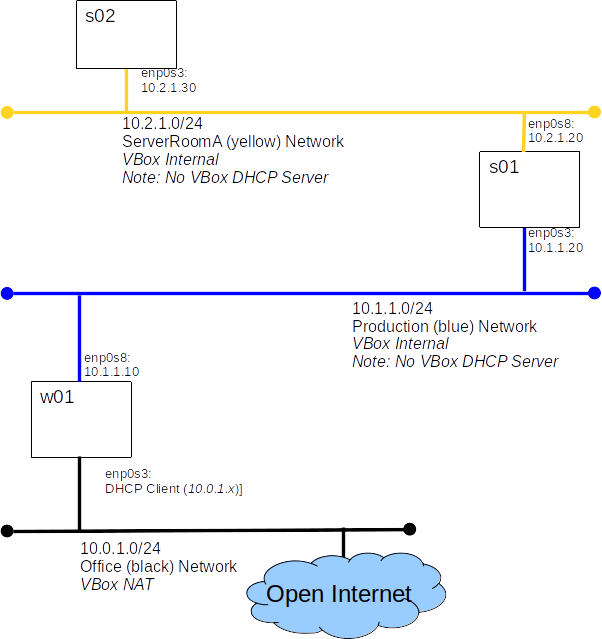

<!DOCTYPE html PUBLIC "-//W3C//DTD HTML 4.01//EN" "http://www.w3.org/TR/html4/strict.dtd">
<html>
<head>
	<meta content="text/html; charset=ISO-8859-1" http-equiv="content-type">
  	<link rel="stylesheet" href="../jbl_labs.css"> 
  	<title>
		Lab: Routing	</title>
<script type="text/javascript">
 	function unhide(divID) {
 		var item = document.getElementById(divID);
 		if (item) {
 			item.className=(item.className=='hidden')?'unhidden':'hidden';
 		}
	}
 </script>
  
</head>

<body>
<h1>Lab: Routing </h1>

<h2>Introduction</h2>
<p class="description">
Today we will add a new server to our virtual lab and that new server will be on a new network.  This means that we will now need to be aware of IP routing.
</p>
<h3>Here is what we will build today</h3>
<p>  </p>

<hr>
<h2>Grading:</h2>
<p class="description">
You will demonstrate your understanding of this lab by completing an Canvas quiz.
</p>

<hr>
<h2>Part A: Setup The Lab</h2>
<p class="description">
Because we are adding a server and a network today's lab will have a relatively complex setup process.  Don't panic, we'll guide you through it step by step.
</p>
<ol>
	<li>Import the appliance which contains w01 and s01.  </li>
	<li>Clone s01 to create s02 
		<ol type=a>
		<li>"Reinitialize MAC addresses of all network cards" when you clone s01 </li>
		<li>Attache s02's network adapter to the <em>yellow</em> internal network.  </li>
		</ol>
		</li>
	<li>Add a second Network Interface Card (NIC) to <strong>s01</strong>
	<ol type="a">
	<li>In the VirtualBox Management GUI, open the <em>Network</em> tab for <strong>s01</strong> </li>
	<li>Enable Adapter 2 with a network type of <em>Internal Network</em> and a Network Name of <em>yellow</em> </li>
	</ol>
	</li>
	<li>Configure the NIC we just added to <strong>s01</strong>
	<ol type="a">
		<li>Have a look at the cards available.  The <span class=cmd>ip addr</span> command should return something like...
<pre class="code">
1: lo: <LOOPBACK,UP,LOWER_UP> mtu 65536 qdisc noqueue state UNKNOWN group default qlen 1000
    link/loopback 00:00:00:00:00:00 brd 00:00:00:00:00:00:w
    inet 127.0.0.1/8 scope host lo
       valid_lft forever preferred_lft forever
    inet6 ::1/128 scope host 
       valid_lft forever preferred_lft forever
2: enp0s3: <BROADCAST,MULTICAST,UP,LOWER_UP> mtu 1500 qdisc fq_codel state UP group default qlen 1000
    link/ether 08:00:27:ca:b4:2b brd ff:ff:ff:ff:ff:ff
    inet 10.1.1.20/24 brd 10.1.1.255 scope global noprefixroute enp0s3
       valid_lft forever preferred_lft forever
3: enp0s8: <BROADCAST,MULTICAST,UP,LOWER_UP> mtu 1500 qdisc fq_codel state UP group default qlen 1000
    link/ether 08:00:27:23:ae:35 brd ff:ff:ff:ff:ff:ff
</pre>
<em>You should see an interface <strong>enp0s8</strong> without an IP address, this should be the NIC we just added</em>
		</li>
		<li>Set a static IP address of <strong>10.2.1.20</strong> for <strong>enp0s8</strong> (look back to the "System Identity" lab for reference)
		<ol type="i">
		<li>Show all the Network Manager connections..
		<pre class="code">
nmcli connection show
</pre>
		</li>
		<li>We have a new connection named <strong>'Wired connection 1'</strong>, let's rename it <strong>enp0s8</strong> to be consistent.
		<pre class="code">
nmcli connection modify 'Wired connection 1' connection.id "enp0s8"
</pre>
		</li>
		<li>Set the IP address and mask
		<pre class="code">
nmcli connection modify enp0s8 ipv4.addresses 10.2.1.20/24
</pre> </li>
		<li>Set the mode from auto to manual.
		<pre class="code">
nmcli connection modify enp0s8 ipv4.method manual
</pre> </li>
		<li>Disable ipv6
		<pre class="code">
nmcli connection modify enp0s8 ipv6.method disable
</pre> </li>
		<li>Apply our changes
		<pre class="code">
nmcli connection up enp0s8
</pre> </li>
		</ol>
		</li>
		</li>
		<li>The output of <span class=cmd>ip addr</span> should look something like this...
<pre class="code">
1: lo: <LOOPBACK,UP,LOWER_UP> mtu 65536 qdisc noqueue state UNKNOWN group default qlen 1000
    link/loopback 00:00:00:00:00:00 brd 00:00:00:00:00:00
    inet 127.0.0.1/8 scope host lo
       valid_lft forever preferred_lft forever
    inet6 ::1/128 scope host 
       valid_lft forever preferred_lft forever
2: enp0s3: <BROADCAST,MULTICAST,UP,LOWER_UP> mtu 1500 qdisc fq_codel state UP group default qlen 1000
    link/ether 08:00:27:ca:b4:2b brd ff:ff:ff:ff:ff:ff
    inet 10.1.1.20/24 brd 10.1.1.255 scope global noprefixroute enp0s3
       valid_lft forever preferred_lft forever
3: enp0s8: <BROADCAST,MULTICAST,UP,LOWER_UP> mtu 1500 qdisc fq_codel state UP group default qlen 1000
    link/ether 08:00:27:23:ae:35 brd ff:ff:ff:ff:ff:ff
    inet 10.2.1.20/24 brd 10.2.1.255 scope
</pre>
		</li>
		<li>Add the new interface to <strong>/etc/hosts</strong> (this is a little tricky because we now have two IP addresses for s01).  Make <strong>hosts</strong> look like this...
<pre class="code">
127.0.0.1   localhost
::1         localhost
10.1.1.20   s01 s01blue
10.2.1.20   s01yellow
10.1.1.10   w01
10.2.1.30   s02
</pre>
		</li>
		<li>Ping ourself all the ways possible... <em>(all should work)</em>
<pre class="code">
ping -c 1 10.1.1.20
ping -c 1 10.2.1.20
ping -c 1 s01
ping -c 1 s01blue
ping -c 1 s01yellow
</pre>
		</li>
		<li>Verify that we can still reach <strong>w01</strong>
<pre class="code">
ping w01
</pre>
		</li>
	</ol>
	</li>
	<li>Give <strong>s02</strong> a new identity (look back to the "System Identity" lab for reference)
	<ol type="a">
	<li>Set the hostname </li>
	<li>Set the IP Address for enp0s3 </li>
	<li>Update /etc/hosts </li>
	<pre class="code">
127.0.0.1   localhost 
::1         localhost
10.1.1.20   s01blue
10.2.1.20   s01 s01yellow
10.1.1.10   w01
10.2.1.30   s02 </pre>
	<li>Check our work with ping...
	<ul>
	<li>s01 should be able to ping s02 </li>
	<li>s02 should be able to ping s01 and w01 </li>
	<li>w01 should be able to ping s01 </li>
	</ul>
	</ol>
	</li>
	</li>
<li>Can <strong>s02</strong> ping <strong>w01</strong>? 
				<a href="javascript:unhide('A1')">Answer</a>
				<span id="A1" class="hidden">
				<em>No!</em>
				</span>
</li>
<li>Does the error message give us a hint to why?
				<a href="javascript:unhide('A2')">Answer</a>
				<span id="A2" class="hidden">
				<em>It does!  "Network is unreachable" tells us that the system has not clue where to <strong>route</strong> the packet.</em>
				</span>
</li>
</ol>

<hr>
<h2>Part B: Routing - Investigation</h2>
<p class="description">
It is now time to investigate our current routing configuration.
</p>

<ol>
<li>On <strong>s02</strong> run the command <span class=cmd>ip route</span> it should output something like...
<pre class="code">
10.2.1.0/24 dev enp0s3 proto kernel scope link src 10.2.1.30 metric 100
</pre>
This tells us that packets destine for the 10.2.1.0/24 network will be sent out the enp0s3 interface with a source IP address of 10.2.1.30.  Packets destined for any other network can not be sent, because we have no idea where to send them.
</li>
<li>Consider the output of <span class=cmd>ip route</span> on <strong>s01</strong>
<pre class="code">
10.1.1.0/24 dev enp0s3 proto kernel scope link src 10.1.1.20 metric 100 
10.2.1.0/24 dev enp0s8 proto kernel scope link src 10.2.1.20 metric 101
</pre>
It tells us: <br>packets destined for the 10.2.1.0/24 network will be sent out the enp0s8 interface; <br>packets destined for the 10.1.1.0/24 network will be sent out the enp0s3 interface;
<br>packets destined for any other network will cause an error.
</li>
<li>Finally consider the output of <span class=cmd>ip route</span> on <strong>w01</strong> (remember <strong>w01</strong> is connected to the open Internet)
<pre class="code">
default via 10.0.2.2 dev enp0s3 
10.0.2.0/24 dev enp0s3 proto kernel scope link src 10.0.2.15
10.1.1.0/24 dev enp0s8 proto kernel scope link src 10.1.1.10
</pre>
You should be able to decipher the last two lines yourself.  The first line tells us that any packet other than those destined for 10.0.2.0/24 or 10.1.1.0/24 networks will be send to 10.0.2.2 via interface enp0s3.
<br>This raises some interesting questions...
<ol type="a">

<li>What "type" of Internet node is 10.0.2.2?
<a href="javascript:unhide('A3')">Answer</a>
				<span id="A3" class="hidden">
				<em>It must be a router.</em>
				</span>
</li>
<li>10.0.2.2 is not on our diagram, where did it come from?
<a href="javascript:unhide('A4')">Answer</a>
				<span id="A4" class="hidden">
				<em>VirtualBox provides a virtual router for NAT interfaces, along with a virtual DHCP server.</em>
				</span>
</li>
</ol>
</li>
</ol>
</li>

<hr>
<h2>Part C: Getting s02 To Talk To w01</h2>
<p class="description">
As you may have concluded if we want s02 to communicate with w01 we'll need a router in between the two.  We could add a dedicated router VM, but Unix/Linux boxes make quite nice routers, so let's turn s01 into a router.
</p>

<ol>
<li>Turn <strong>s01</strong> into a router. <em>This is a remarkably easy task, all we need to do is to tell s01 to forward IP packets.</em>
<ol type="a">
<li>Create the file <strong>/usr/lib/sysctl.d/90-ip_forward.conf</strong> containing one line
<pre class="code">
net.ipv4.ip_forward = 1
</pre>
</li>
<li>The firewalld service is not designed to work on a router.  At work we would use another firewall manager.  Today we will just disable firewalld.
<pre class="code">
systemctl disable firewalld
systemctl stop firewalld
</pre>
</li>
<li>reboot s01 </li>
<li>Check that ip_forward is now set to 1
<pre class="code">
sysctl net.ipv4.ip_forward
</pre>
</li>
</ol>
</li>
<li>Tell <strong>s02</strong> where to forward packets.  <em>We can, and should, set s01 as the default router.</em>
<ol type="a">
<li>Modify the connection for enp0s3 to have a default gateway configured for the system when the interface come up.
<pre class="code">
nmcli connection modify enp0s3 ipv4.gateway 10.2.1.20
</pre>
</li>
<li>Restart the interface
<pre class="code">
nmcli connection up enp0s3
</pre>
</li>
<li><span class=cmd>ip route</span> output should now include this line
<pre class="code">
default via 10.2.1.20 dev enp0s3 proto static metric 100
</pre>
</li>
</ol>
</li>
<li>Check our work so far...
<ul>
<li>ping <strong>s01yellow</strong> from <strong>s02</strong> - should succeed.  </li>
<li>ping <strong>s01blue</strong> from <strong>s02</strong> - should succeed.  </li>
<li>ping <strong>w01</strong> from <strong>s02</strong> - should fail.  </li>
<li>Why can we ping the blue side of our router, s01, but not w01?
<a href="javascript:unhide('A5')">Answer</a>
				<span id="A5" class="hidden">
				<br>
				<em>Imagine what happens to the ping packet we send to w01.  
				<br>s02 sends it to s01
				<br>s01 forwards it to w01
				<br>w01 say, "right a ping request, no problem I'll send a response to 10.2.1.30, I don't have a direct route so I'll send the packet to my default router (which the VirtualBox NAT router)

				</em>
				</span>
</ul>
</li>
<li>Tell w01 where to send packets destined for the 10.2.1.0/24 network.  We do not have Network Manager on w01, we are using old school configuration methods.  We can not add a default route, because w01 is connected to the Internet and needs to have its default route point 'out'.
<ol type="a">
<li><strong>As root on w01</strong>: Add a route from the command line
<pre class="code">
ip route add 10.2.1.0/24 via 10.1.1.20
</pre>
</li>
<li>Check our work: <span class=cmd>ip r</span> should show something like..
<pre class="code">
default via 10.0.2.2 dev enp0s3 
10.0.2.0/24 dev enp0s3 proto kernel scope link src 10.0.2.15 
10.1.1.0/24 dev enp0s8 proto kernel scope link src 10.1.1.10 
10.2.1.0/24 via 10.1.1.20 dev enp0s8 
</pre>
</li>
<li>The route we added will not survive a reboot.  To configure the route every time we boot we need to modify the /etc/network/interfaces file.  
<br>We will add <span class=cmd>up ip route add 10.2.1.0/24 via 10.1.1.20</span> to the configuration of enp0s8.  So that the file looks like this...
<pre class="code">
# This file describes the network interfaces available on your system
# and how to activate them. For more information, see interfaces(5).

source /etc/network/interfaces.d/*

# The loopback network interface
auto lo
iface lo inet loopback

# The NAT interface
auto enp0s3
iface enp0s3 inet dhcp

# The blue interface
auto enp0s8
iface enp0s8 inet static
	address 10.1.1.10/24
	up ip route add 10.2.1.0/24 via 10.1.1.20
</pre>
</li>

</li>

</ol>
</li>
<li>Final check...(all should work)
<ul>
<li>ping w01 from s01 </li>
<li>ping s01 from w01 </li>
<li>Check that w01 can still access the open 'Net </li>
</ul>
</li>
</ol>


<hr>
<h2>Part D: Evaluation</h2>
<p class="description">
Complete the Canvas quiz for this lab.
</p>
</body>
</html>
